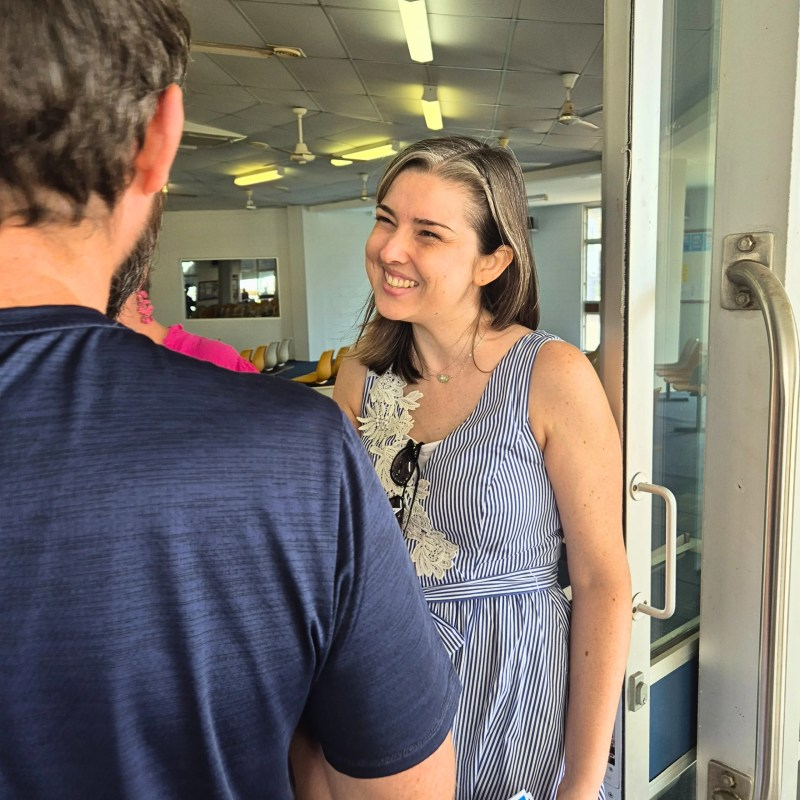

Sundays at 9:00am and 10:30am
A church family in the heart of Townsville
Come along exactly as you are.
Plan your visit
A simple welcome
Know Jesus and make him known
St Andrew's is a Presbyterian church community in Townsville. There is space for questions, children, conversation and learning together.
Sunday at St Andrew's
Both services include Bible reading, prayer, singing and a sermon. Stay for morning tea afterwards.